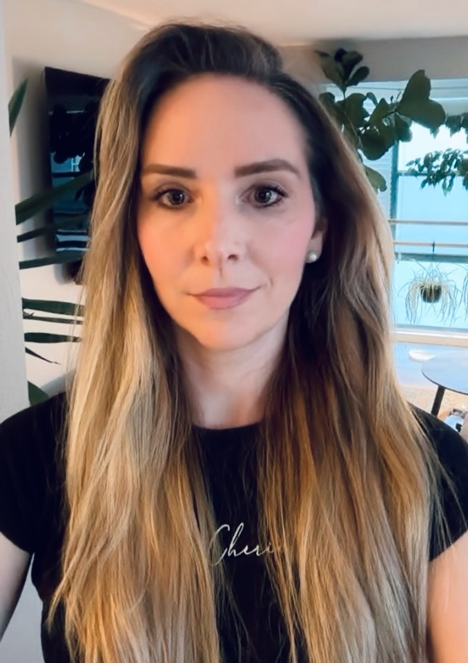
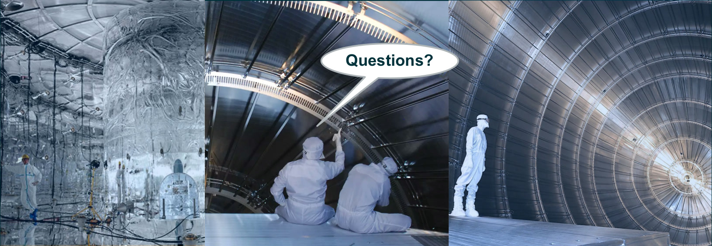

About me
Ann-Kathrin
Schuetz.

Physicist by training, experimentalist by habit, and increasingly drawn to robotics.
I studied physics at the University of Tübingen and did my PhD there on the GERDA search for neutrinoless double-beta decay. In 2021 I moved to Lawrence Berkeley National Laboratory, and alongside my research I completed a master’s in data science at UC Berkeley.
Postdoctoral Researcher, Research Scientist
Lawrence Berkeley National Laboratory · Since 2021
How I work
Models, measurements,
and machines.
I like working across the boundary between a model and the system it describes. My background in experimental physics taught me to connect algorithms with noisy measurements, imperfect simulations, and the hardware producing the data. It also made me care about practical questions: how much computation a method needs, how quickly it can respond, and how to tell when its predictions are reliable.
At Berkeley Lab, most of my work concerns rare events: outcomes so unlikely that a simulation produces only a handful of them. I developed RESuM, a multi-fidelity surrogate with calibrated uncertainty for detector design (ICLR 2025 Spotlight), and repurposed it as a likelihood emulator for binary black-hole population inference. Other work includes deep-learning classifiers for sensor waveforms and an LLM agent that turns incomplete engineering documentation into validated 3D simulation geometries. I build research software in Python and C++ and run distributed simulation and training pipelines at NERSC.
I also build the measurement systems themselves: low-noise electronics, cleanroom fabrication, hardware testing, and data acquisition. That experience gives me a concrete view of the constraints a learning system has to work within. Alongside the technical work, I’ve mentored students and represented early-career researchers in an international collaboration.
In the master’s program, UC Berkeley’s Master of Information and Data Science, I took coursework in computer vision, applied machine learning, generative AI, neurosymbolic AI and ML at scale. In the capstone, OmniSearch, I built a simulator and multi-agent reinforcement learning for drone and ground-robot teams that coordinate a wildfire search without a central controller.
The project grew my interest in robotics, because many of its problems are physics problems. A legged robot is a physical system: rigid-body dynamics, contact and friction, the torque limits and delays of its motors. When a policy trained in simulation fails on hardware, the cause is usually a physical quantity the simulator gets wrong, such as a friction coefficient, a contact stiffness or an actuator delay. Finding which one is the same work as tracing a mismatch between a detector simulation and measured data back to a mismodelled energy loss or field map, rather than randomizing everything and hoping the policy copes.
Physics has also taught me rigour in uncertainty: a result comes with an error budget of its systematic effects, and a model is trusted only after its uncertainties have been checked against independent measurements. Robotics needs the same rigour in evaluation, because the failures that matter are rare, too rare to be counted directly in simulation or testing. Estimating such probabilities with calibrated uncertainty, at a fraction of the computational cost, is the problem I work on at Berkeley Lab. I got my own Unitree Go2 to learn the robotics stack first-hand: ROS 2, training locomotion policies in simulation with Isaac Lab, and deploying them on real hardware.

Let’s connect
Open to conversations about physical AI and robotics.
I’m interested in opportunities in machine learning, physical systems, computer vision, and robotics—especially where models meet sensors, simulation, or hardware.